Seaborn的用法、用处、实例
Seaborn 是一个对 matplotlib 进行高级封装的图形可视化库，具有着与 pandas 统一的数据结构。运用 seaborn, 我们可以通过极简的代码绘制出美观并具有分析价值的图表。
一、可视化统计关系
以 tips、fmri 数据库为例，以 Seaborn 中的 relplot 函数为接口，分析各变量之间的关系
在此，我们介绍 seaborn 中的 relplot 函数——它封装了绘制散点图的 scatterplot 函数和绘制线图的 lineplot 函数，我们可以通过 relplot 函数中的 kind 参数来选择调用上述二者。
def relplot(
*,
x=None, y=None,
hue=None, size=None, style=None, data=None,
row=None, col=None,
col_wrap=None, row_order=None, col_order=None,
palette=None, hue_order=None, hue_norm=None,
sizes=None, size_order=None, size_norm=None,
markers=None, dashes=None, style_order=None,
legend="auto", kind="scatter",
height=5, aspect=1, facet_kws=None,
units=None,
**kwargs
):
relplot 函数的定义如上，我们可以通过调整众多的参数来实现图像的调控；然而在实际运用中，我们一般只需调整少数几个参数，其他的保持默认值，便能绘制出较为精美的图表
sns.relplot(x='x_data', y='y_data', kind='scatter', data=data_set)
# x_data指充当x轴方向的数据的索引名，y_data同理。kind参数可指定绘制的图表类型
# kind='scatter'，绘制的是散点图；kind='line'，绘制的是线型图
# data=data_set 中的data_set指的是绘制图表的数据库对象名
relplot函数的运用之散点图
下面以 seaborn 官方内置数据库 tips 为例，分析顾客所付小费与相关数据之间的相关性
- 可以采用官网上的方式直接导入，但一般因为网络问题而失败
tips = sns.load_dataset("tips")
-
可以先下载 seaborn 内置数据库，进行本地访问（下载网址：https://github.com/mwaskom/seaborn-data）
-
tips 数据库的前五行如下
total_bill tip sex smoker day time size
0 16.99 1.01 Female No Sun Dinner 2
1 10.34 1.66 Male No Sun Dinner 3
2 21.01 3.50 Male No Sun Dinner 3
3 23.68 3.31 Male No Sun Dinner 2
4 24.59 3.61 Female No Sun Dinner 4
绘制 tip 与 total-bill 之间关系的散点图的示例代码如下
import seaborn as sns
import pandas as pd
import matplotlib.pyplot as plt
df = pd.read_csv("seaborn-data-master/tips.csv")
print(df.head())
sns.relplot(x="total_bill", y="tip", data=df)
plt.show()
绘制图表结果如下：
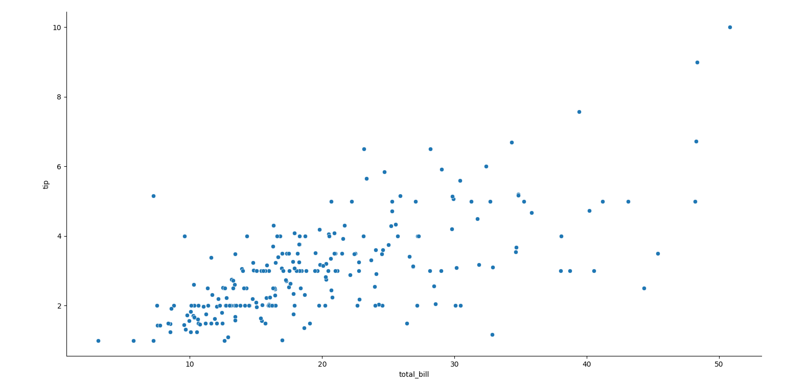
relplot函数中的几个语义映射参数
我们能够通过进一步细化参数值，来使图表反映出更多信息，下面介绍三个额外的参数：hue, style, size. 它们能够将相关数据特征映射到图表中的点的色调、样式和大小等图像特征上。
示例代码：
import seaborn as sns
import pandas as pd
import matplotlib.pyplot as plt
df = pd.read_csv("seaborn-data-master/tips.csv")
print(df.head())
sns.relplot(x="total_bill", y="tip",
hue="smoker", # 根据数据库中smoker条目的值，而使点呈现出不同的颜色
style="sex", # 根据数据库中sex条目的值，而使点呈现出不同的样式
size='size', # 根据数据库中size条目的值，而使点呈现出不同的大小
data=df)
plt.show()
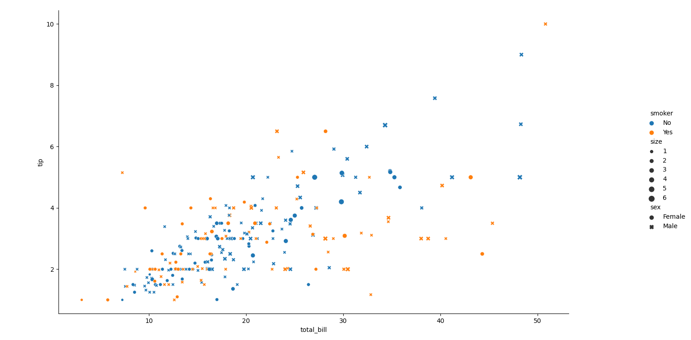
relplot函数中的col参数
我们也可以通过设定 relplot 函数中的 col 参数的值，来分类绘制样式一致的多个子图, 这样能实现快捷地分类分析，而不必逐个进行子图的绘制
示例代码：
import seaborn as sns
import pandas as pd
import matplotlib.pyplot as plt
df = pd.read_csv("seaborn-data-master/tips.csv")
print(df.head())
# 通过设定col参数，来分类绘制不同时间用餐的人群数据散点图
sns.relplot(x="total_bill", y="tip", hue="smoker", style="sex", size='size', data=df, col='time')
plt.show()
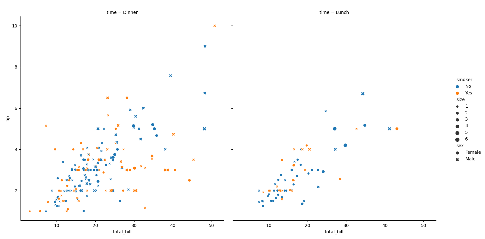
relplot函数的运用之线型图
relplot 函数不仅能绘制散点图，还能通过数据生成线型图及相关的置信区间，下面以 fmri 的数据库为例绘制线型图。
fmri 数据库的前五行如下：
subject timepoint event region signal
0 s13 18 stim parietal -0.017552
1 s5 14 stim parietal -0.080883
2 s12 18 stim parietal -0.081033
3 s11 18 stim parietal -0.046134
4 s10 18 stim parietal -0.037970
示例代码：
import seaborn as sns
import pandas as pd
import matplotlib.pyplot as plt
df = pd.read_csv("seaborn-data-master/fmri.csv")
ax = sns.relplot(x="timepoint", y="signal", kind='line', data=df) # 设置kind参数为‘line'
plt.show()
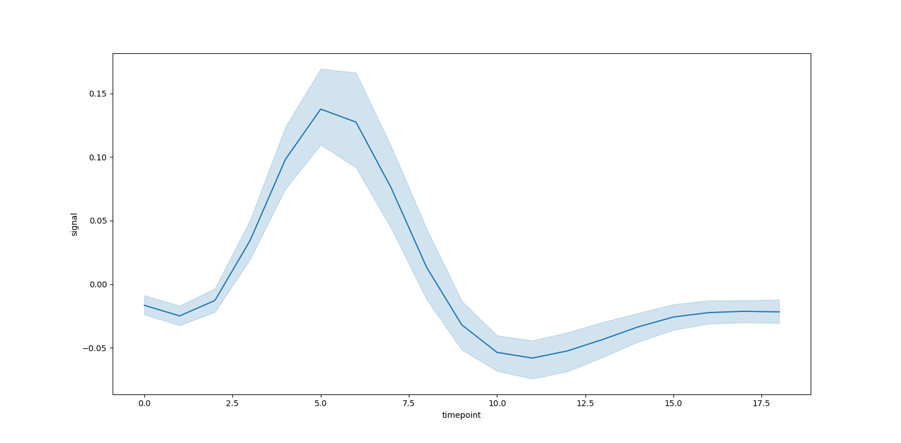
注意到这里对于相同的x轴变量有许多不同的观测值，seaborn 默认绘制观测值的平均数曲线与95%的置信区间，十分快捷的展现出数据之间的相关性与变化趋势。
relplot函数中的ci参数
可以通过修改 ci 参数，来取消绘制置信区间，用其他方式来展现数据的分布范围
ax = sns.relplot(x="timepoint", y="signal", kind='line', data=df) # 默认形式，绘制平均值及置信区间
ax = sns.relplot(x="timepoint", y="signal", kind='line', data=df, ci= None) # 取消绘制置信区间
ax = sns.relplot(x="timepoint", y="signal", kind='line', data=df) # 取消绘制置信区间，借助标准差来展现数据分布范围
线型图美化
与散点图一样，我们能通过 hue，style 参数来使线型图更加多样化
示例代码
import seaborn as sns
import pandas as pd
import matplotlib.pyplot as plt
df = pd.read_csv("seaborn-data-master/fmri.csv")
sns.relplot(x="timepoint", y="signal", kind='line', data=df, hue='event', style='event') # 根据event条目的值来设置不同的线段样式
plt.show()
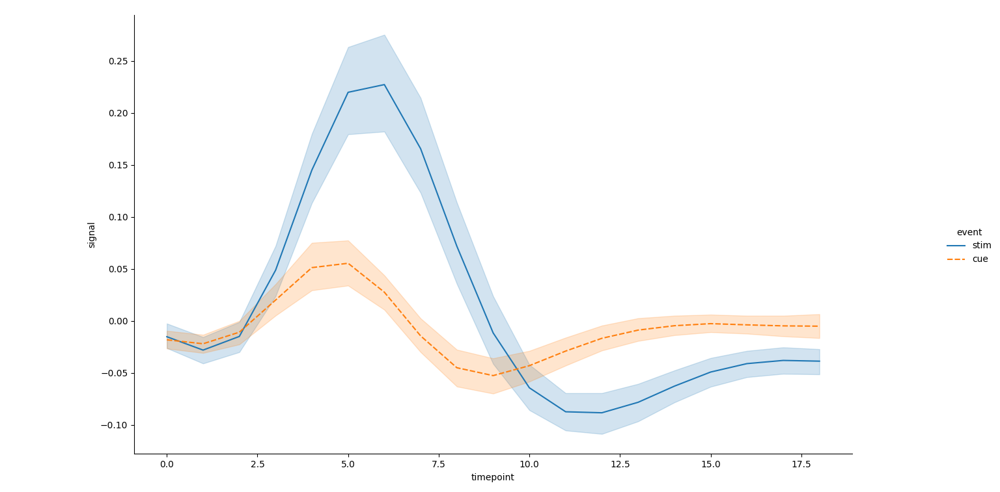
二、可视化分类数据
以tips,titanic数据库为例，以Seaborn中的catplot函数为接口，对数据库数据进行分类
在上一节，我们利用 relplot 接口绘制了描述不同变量之间关系的图表；接下来，我们将应用 catplot 接口来实现数据分类的可视化。常见的数据分类图表有条形图、散点图、箱线图等，以下将一一提供对应的实例。
catplot接口
catplot 接口的使用与 relplot 接口是十分类似的，其定义如下：
def catplot(
*,
x=None, y=None,
hue=None, data=None,
row=None, col=None, # TODO move in front of data when * is enforced
col_wrap=None, estimator=np.mean, ci=95, n_boot=1000,
units=None, seed=None, order=None, hue_order=None, row_order=None,
col_order=None, kind="strip", height=5, aspect=1,
orient=None, color=None, palette=None,
legend=True, legend_out=True, sharex=True, sharey=True,
margin_titles=False, facet_kws=None,
**kwargs
):
我们可以通过 kind 参数来指定图表的类型，常见的被 catplot 接口封装的绘图函数及对应的 kind 参数如下：
- 分类散点图
- stripplot(), kind=‘strip’（默认值）
- swarmplot(), kind=‘swarm’
- 分类分布图
- boxplot(), kind=‘box’
- violinplot(), kind=‘violin’
- boxenplot(), kind=‘boxen’
- 分类估计图
- pointplot(), kind=‘point’
- barplot(), kind=‘bar’
- countplot(), kind=‘count’
同时注意到在 catplot 中，依旧支持 hue 参数，但并不支持 size 和 style 参数
分类散点图的绘制
我们可以借助 catplot 绘制两种分类散点图，分别为 stripplot 和 swarmplot。两者的区别在于，swarmplot 为了避免数据点在图表中互相重叠的现象，而应用了一种使数据沿分类轴分布的算法，以便更好地观测分布。
代码如下：
import seaborn as sns
import pandas as pd
import matplotlib.pyplot as plt
tips = pd.read_csv('seaborn-data-master/tips.csv')
print(tips.head())
fig, ax_arr = plt.subplots(1, 2, figsize=(8,10))
plt1 = sns.stripplot(x='day', y='total_bill', data=tips, ax=ax_arr[0]) # 绘制stripplot
plt1.set(title='stripplot')
plt2 = sns.swarmplot(x='day', y='total_bill', data=tips, ax=ax_arr[1]) # 绘制stripplot
plt2.set(title='swarmplot')
plt.show()
绘制的图表
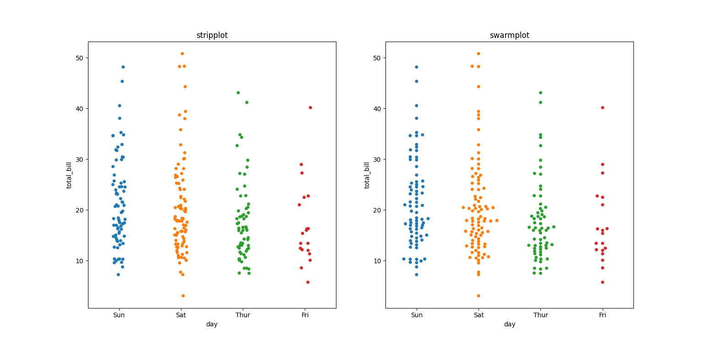
注意，这里并没有使用 catplot 绘制，原因是 catplot 接口是一个 figure-level 的接口，不便实现多个子图的绘制（axes-level）, 所以在此直接调用了被 catplot 封装的函数 stripplot() 和 swarmplot()，并绘制在一张图中，便于比较。
jitter、order、hue关键字的使用
-
在 stripplot() 中有一种特殊的关键字叫做 jitter,其默认值为 True,可以通过调控 jitter 参数来控制数据点的左右抖动与否。
-
而 hue 关键字的作用效果与 relplot 中的效果是一致的，在此不赘述。
-
order 关键字则起到了指定分类轴上各分类词条排布顺序的作用
示例代码：
import seaborn as sns
import pandas as pd
import matplotlib.pyplot as plt
tip = pd.read_csv('seaborn-data-master/tips.csv')
# 禁用jitter， 添加'sex'的图例，指定了分类轴上各分类条目的顺序
sns.catplot(kind='strip', x='smoker', y='tip', hue='sex', jitter=False, order=['No', 'Yes'], data=tip)
plt.show()
绘制的图表
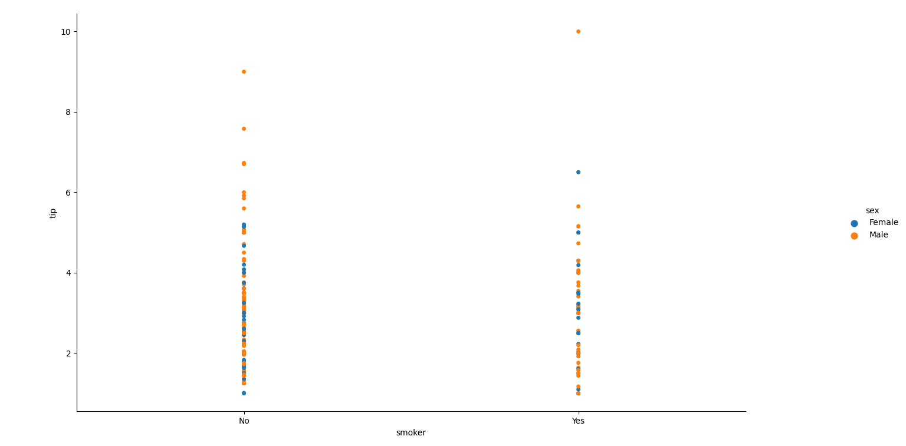
分类分布图
散点图能处理的数据集的规模是有限的，过多的数据会导致大量数据点的互相重叠，不利于分布分析。因此，接下来将介绍使用箱线图和条形图进行绘制。
箱线图
示例代码
import seaborn as sns
import pandas as pd
import matplotlib.pyplot as plt
tip = pd.read_csv('seaborn-data-master/tips.csv')
sns.catplot(kind='box', x='day', y='total_bill', data=tip)
plt.show()
绘制图表
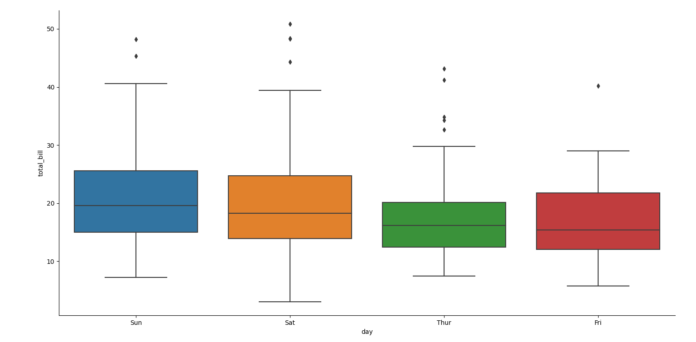
条形图
calplot 中的条形图绘制有两种函数，一者为 barplot，另一者为 countplot
barplot
import seaborn as sns
import pandas as pd
import matplotlib.pyplot as plt
titanic = pd.read_csv('seaborn-data-master/titanic.csv')
sns.catplot(kind='bar', x='sex', y='survived', hue='class', data=titanic) # 指定kind参数为bar
plt.show()
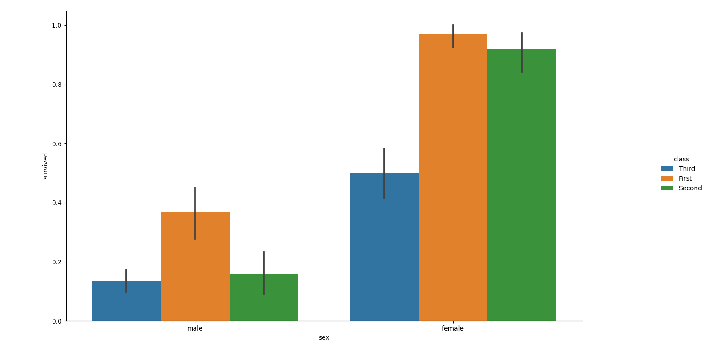
注意到对于多个观测值，seaborn 会自动计算数据的平均值和置信区间，方便进行数据分析（分析结果是一等舱人士的存活率大于其他等级舱的乘客，女性存活率远大于男性存活率）
countplot
我们还可以使用 countplot 函数来对某一条目进行分类，并自动统计各个类别的数目
import seaborn as sns
import pandas as pd
import matplotlib.pyplot as plt
titanic = pd.read_csv('seaborn-data-master/titanic.csv')
sns.catplot(kind='count', x='deck', data=titanic, order=['A', 'B', 'C', 'E', 'F', 'G'], palette='ch:.25')
plt.show()
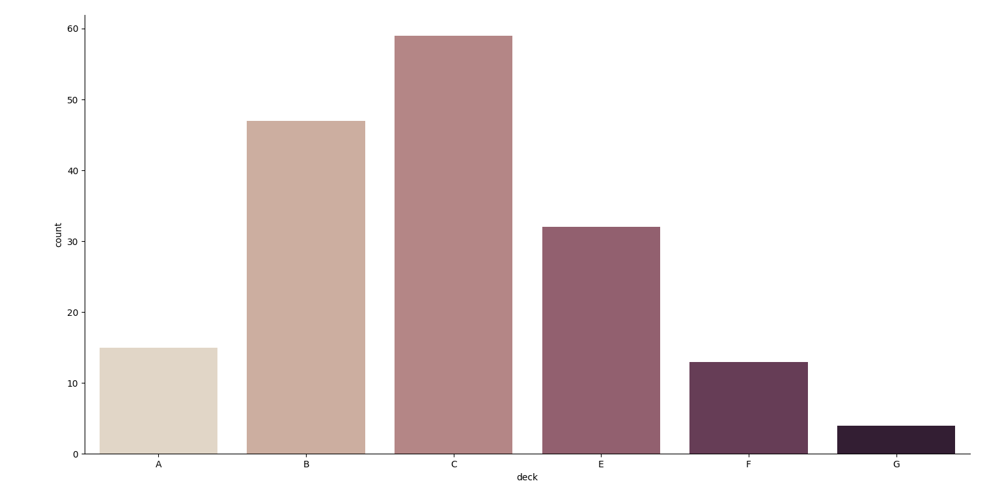
三、可视化数据集的分布
除了对数据进行关系分析与分类分析，有时我们还需要研究数据集中各数据的分布情况，本节将介绍 seaborn 中关于数据分布分析的一些常用工具
单变量分布
import seaborn as sns
import numpy as np
import matplotlib.pyplot as plt
df = np.random.normal(size=100) # 生成一个正态分布的数据集
sns.displot(data=df, kde=True, rug=True) # kde为核密度估计，用于计算密度函数；rug对应于观测值分布轴上的一个个垂直刻度，同样能展现数据的分布密度
plt.show()
绘制图表
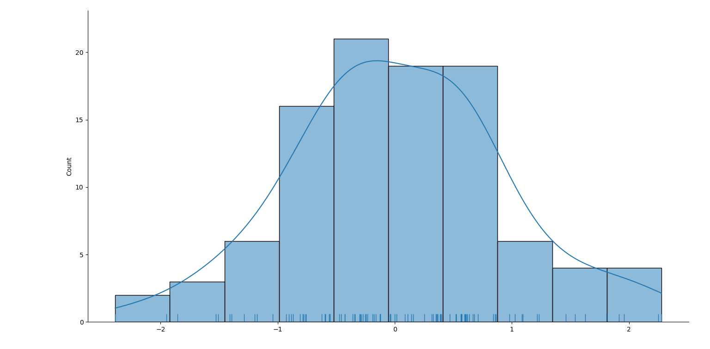
二元变量分布
我们还可以使用 seaborn 中的 jointplot 函数来进行二元变量的分布分析
import numpy as np
import seaborn as sns
import pandas as pd
import matplotlib.pyplot as plt
mean, cov = [0, 1], [(1, .5), (.5, 1)] # mean指多元变量的均值，而cov则是描述数据分布的协方差矩阵
data = np.random.multivariate_normal(mean, cov, 200)
df = pd.DataFrame(data, columns=["x", "y"])
sns.jointplot(x='x', y='y', data=df) # jointplot的默认图表类型为散点图
plt.show()
绘制图表
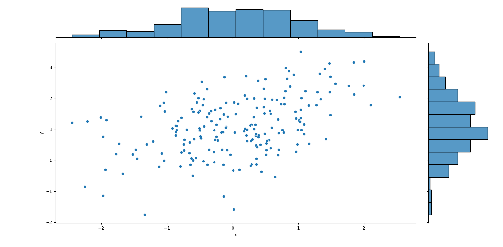
四、线性关系可视化
在处理数据时，我们还可以利用 seaborn 中的 regplot 和 lmplot 来进行数据的线性回归，下面将介绍这两个函数的使用
regplot和lmplot的使用区别
以下为两者的一般调用方式：
sns.regplot(x='total_bill', y='tip', data=tips);
sns.lmplot(x='total_bill', y='tip', data=tips)
可见两者的大致调用方式是与之前的函数类似的，依靠‘x’关键字来指定x轴数据，‘y’关键字来指定y轴数据，‘data’关键字来指定数据库。
然而，在 regplot 函数中，data 关键字并非必填项，而’x’ 和 ‘y’关键字能接收的数据类型范围广泛，包括 numpy 数组，Series 对象等等。而在 lmplot 函数，data 关键字为必填项，’x’和‘y’关键字也只能接受字符串类型的数据（即数据库的索引）
不过，由于 lmplot 函数能实现 regplot 函数所有的功能且实现方式类似，因此接下来的演示将以 lmplot 函数的使用为主
lmplot函数的使用
import seaborn as sns
import pandas as pd
import matplotlib.pyplot as plt
df = pd.read_csv('seaborn-data-master/tips.csv')
print(df.head())
sns.lmplot(x='total_bill', y='tip', data=df)
plt.show()
绘制图表
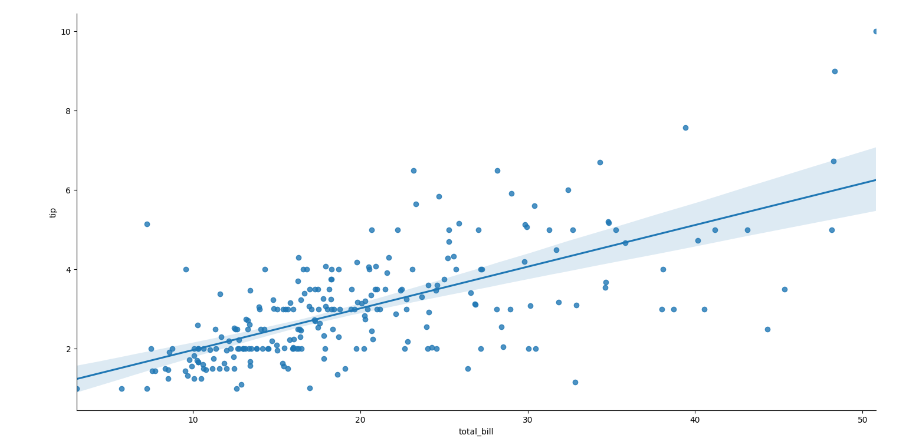
离散数据的线性可视化
当处理离散数据的可视化时，难免会遇到数据点重合的情况（参考之前散点图的绘制），因此可以设置 x_jitter 和 y_jitter 参数，来避免数据重叠
import seaborn as sns
import pandas as pd
import matplotlib.pyplot as plt
df = pd.read_csv('seaborn-data-master/tips.csv')
print(df.head())
sns.lmplot(x='size', y='tip', x_jitter=0.05, data=df) # 设置x_jitter,防止数据在x轴方向重叠
plt.show()
绘制图表
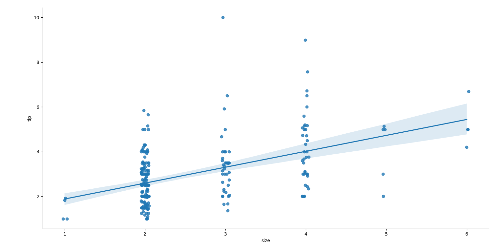
非线性回归
lmplot 函数不仅可实现线性回归，还能进行以多项式为基础的非线性回归，方法是设置 order 关键字的值。
示例代码：
import seaborn as sns
import pandas as pd
import matplotlib.pyplot as plt
df = pd.read_csv('seaborn-data-master/tips.csv')
print(df.head())
sns.lmplot(x="total_bill", y="tip", data=df, order=3) # 指定order为3,即为三次多项式模拟
plt.show()
绘制图表
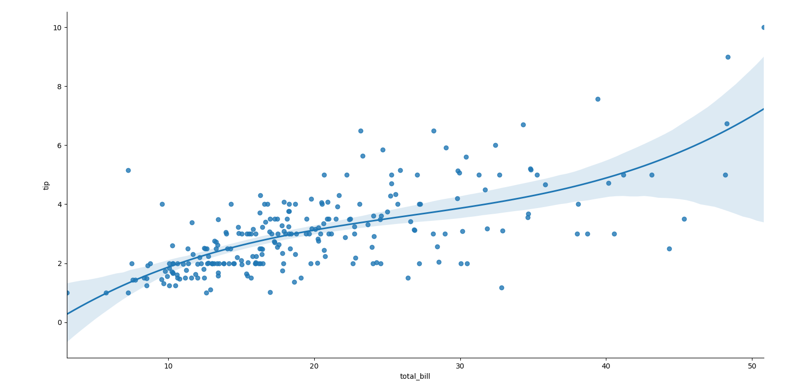
hue, col的使用
之前提到的 hue，col 关键字同样可以在 lmplot 中使用，方式类似，可以参考之前的教程
五、Seaborn图表美化
调整配色
seaborn 图表既可以自定义配色，又可以使用既定的几种配色方案，使图像更加美观
分类调色板
分类调色板主要应用于区分没有内在联系的离散数据，可以使用 color_palette 来定义调色板。
默认主题有六种变体，分别为 deep,muted,pastel,bright,dark,colorblind.
示例代码
import seaborn as sns
import pandas as pd
import matplotlib.pyplot as plt
sns.color_palette('pastel')
titanic = pd.read_csv('seaborn-data-master/titanic.csv')
sns.catplot(kind='count', x='deck', data=titanic, order=['A', 'B', 'C', 'E', 'F', 'G'], palette=sns.color_palette('pastel')) # 在calplot函数中指定palette关键字，以此修改配色（在这里指定了pastel配色方案）
plt.show()
绘制图表
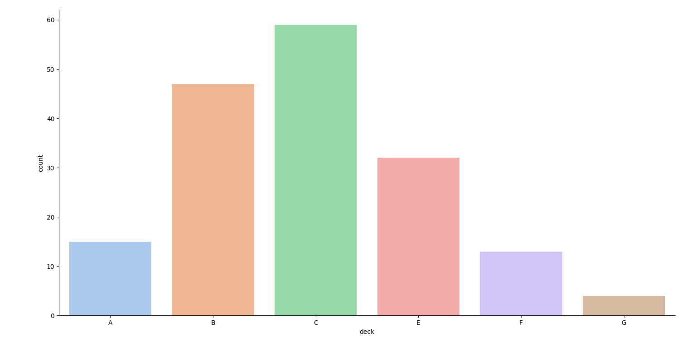
当然也可以采用自定义的方式，可以使用 husl 系统来生成特定种类的变化均匀的颜色
示例代码：
import seaborn as sns
import pandas as pd
import matplotlib.pyplot as plt
pal = sns.color_palette('husl', 6) #"husl"为颜色系统的名字，而数字6代表想生成的色块种类数目
titanic = pd.read_csv('seaborn-data-master/titanic.csv')
sns.catplot(kind='count', x='deck', data=titanic, order=['A', 'B', 'C', 'E', 'F', 'G'], palette=pal)
plt.show()
绘制图表
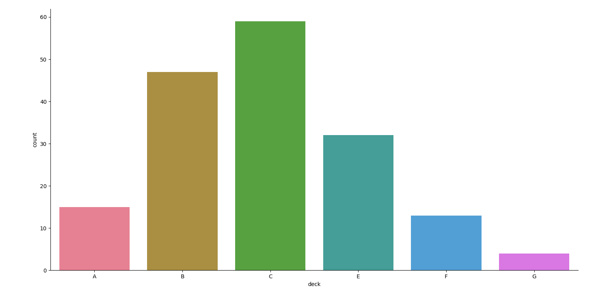
顺序调色板
当我们想通过颜色的深浅来区分不同分类之间的渐进关系时，可以采用顺序调色板，在这里介绍一种基础的使用方法
示例代码
import seaborn as sns
import pandas as pd
import matplotlib.pyplot as plt
pal = sns.color_palette("Blues") # 这里输入Blues，同理可以输入其他颜色如"Reds"""Greens""Purples"等，可以添加尾缀
titanic = pd.read_csv('seaborn-data-master/titanic.csv')
sns.catplot(kind='count', x='deck', data=titanic, order=['A', 'B', 'C', 'E', 'F', 'G'], palette=pal)
plt.show()
绘制图表
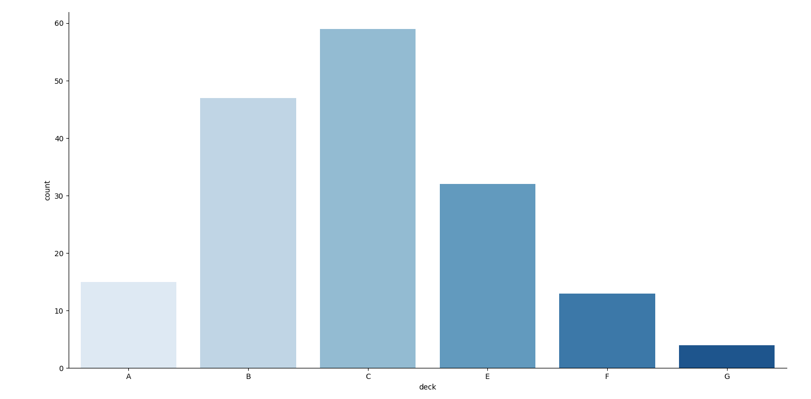
可以在“Blues”后面加入尾缀“_r”，使色块深浅分布倒置
风格设置
seaborn 设置图表风格的方式主要有三种：
- set（通用设置接口）
- set_style（修改全局设置的接口）
- axes_style（修改子图级别风格的接口）
官方提供的风格有以下五种
- darkgrid，默认风格
- whitegrid
- dark
- white
- ticks
环境设置
- set，通用设置接口
- set_context，全局环境设置
- plotting_context，设置当前图（axes级）的绘图环境
当前支持的绘图环境主要有4种：
- notebook，默认环境
- paper
- talk
- poster
这些绘图环境主要改的是图表的字体大小